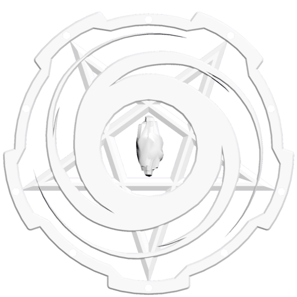

-
ГЛАВНАЯ
-
РАБОТА
-
ЭКСКУРСИИ
-
КОНТАКТЫ
-
О НАС
Мы предлагаем широкий спектр услуг, включая научные исследования, экологические мониторинги и развлекательные экскурсии. Каждый подводный робот, который мы используем, оснащён современным оборудованием и технологиями, что позволяет получать уникальные данные и захватывающие видеоматериалы с глубины.
Для нас важна не только работа с технологиями, но и взаимодействие с клиентами. Мы проводим предварительные консультации, чтобы понять ваши интересы и создаем индивидуальные маршруты, которые будут и интересными, и безопасными.
Сообщите нам о своих идеях, и мы поможем вам реализовать вашу мечту о подводном исследовании. Присоединяйтесь к нам в этом захватывающем приключении и откройте для себя мир, скрытый под поверхностью воды!